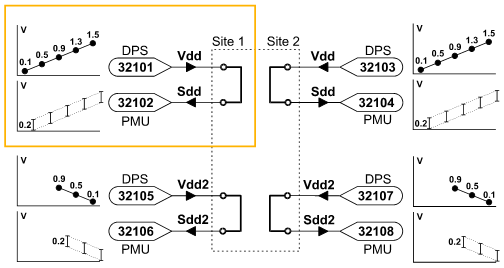

A dynamic DC test example
This use case example illustrates the setup of a dynamic DC test and will help you to understand the related user interface concepts, firmware commands, and test methods.

The dynamic DC test in this example uses the DC signal pin SDD (PMU) and the power pin VDD (DPS), which are connected on the DUT board. The example defines a two-site setup. The setup for the pins Vdd2 and Sdd2 is equivalent and not further discussed in this use case.
The test will
- drive a rising voltage signal on the power pin (DPS), using test points on the sequencer.
- measure the output voltage on the DC signal (PMU) pin.
The example setup for this dynamic DC test shows in detail how to
- enable test points in the .technology file,
- define the primaries,which includes
- configuring the pins,
- defining a level equation set for the power pin,
- defining a timing equation set with a period,
- creating a pattern,
- defining events and test points,
- write the test methods for executing the test, and the connect and disconnect tasks,
- set up the testflow,
- execute the test and retrieve the results,
- debug the test.
Functional changes
- Introduced in SmarTest 6.5.2